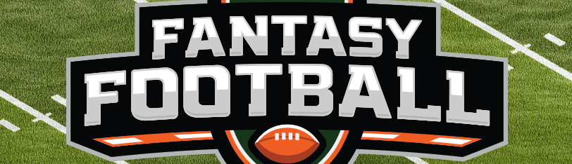
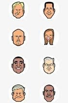

Back to List

Fantasy Football:
A Game Beyond the Gridiron
October, 15, 2024 | Brandon Barnes
Fantasy Football is a fun way I get involved with the football I watch and have fun with friends and family! Every play is important as you root for your players to do well and laugh when your friends' players are not doing well. From draft day parties to wild fantasy punishments and everything in between, fantasy football is a fun game for everyone all season long, so grab your friends and a bag of chips, turn on the TV and sit back and have a great time!
How it Started
The first league was called the Greater Oakland Professional Pigskin Prognosticators League which was started in Oakland in 1963. Although much has changed from the original version from the player positions to how to score this was what inspired the game so many enjoy today. Through all the years as of 2015, the GOPPPL was still active and had maintained the original scoring system.
How it’s grown
More than a million people in the United States were playing fantasy football by 1989. That number jumped to over 12 million people in 2006. Today, an estimated 50 million people play fantasy football in the United States and Canada. It has become so popular that DirecTV’s “NFL Sunday Ticket” package debuted on the Red Zone Channel in 2009. Fantasy football owners can view every touchdown from every game live. A few years later, “Fantasy Zone” was created to focus solely on how the live action is affecting the day’s fantasy stats, with up-to-the-minute, game-to-game analysis, stats and on-screen tickers that offer projections and key player updates.
Wildest Fantasy Football Punishments
One of the most entertaining aspects of fantasy football is the punishments for the last-place finishers in leagues. These can range from the mildly embarrassing—like wearing a silly costume in public—to the outright outrageous, such as getting a tattoo of the winner’s choice! Other wild punishments include performing karaoke in front of friends, spending a day as a personal assistant to the league winner, or even hosting a themed party. These creative penalties not only add an extra layer of fun but also keep everyone invested in the season, no matter how their teams perform.
Why Fantasy Football is Fun
At its core, fantasy football is about connection and enjoyment. It encourages participants to engage with the NFL in new ways, understanding players, statistics, and game strategies. Even if you don’t typically watch football, joining a fantasy league can offer a fresh perspective, turning game days into thrilling events where every player’s performance can impact your success. Plus, the shared experience of competing with friends or family creates a sense of camaraderie that extends far beyond the final score.
Notable ESPN Personalities in Fantasy Football
| Name | Role |  |
|---|
| Matthew Berry | Fantasy Analyst |
| Field Yates | Fantasy Insider |
| Stephania Bell | Injury Expert |
| Mike Clay | Fantasy Football Expert |
So whether you’re a die-hard football fan or just someone looking for a fun way to connect with friends, fantasy football offers a unique experience that’s hard to beat. Why not give it a try? You might just find yourself hooked!
Further Reading